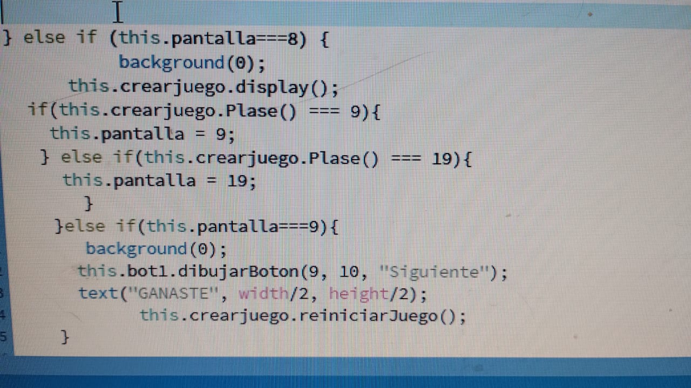
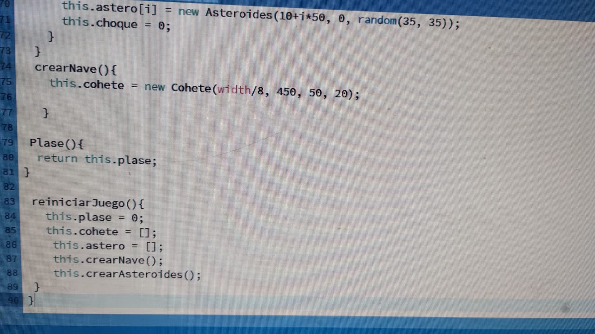

Trabajo final de Tecnologia Wed
Trabajo sobre Los Desterrados, de Ray Bra, por Augusto y Alexander
El trabajo fue hacer en p5-js, rearmar la aventura gráfica con clases y objetos e incorporar el mini-juego del TP#5, al principio fue fácil, ya que teníamos los trabajos hechos y aprobados, nos tomo un día unir todo, pero al probarlo , vimos que el reinicio del juego no estaba funcionando, estuvimos una semana probando y investigando códigos para resolver el problema pero no resultaba. Faltaban pocos dias para la entrega y tuvimos una charla con el profe la cual fue el milagro que necesitábamos, resolvimos el problemas creando un estado al juego, usando retun y condicionales pudimos terminar.
 Cuento de Ray Bradbury
La historia comienza con una escena en la que las tres brujas de Macbeth elaboran una poción y miran en un cristal, que revela otra escena que tiene lugar en un cohete espacial. Procedentes de la Tierra, los hombres en la nave espacial están entrando en pánico porque recientemente han experimentado pesadillas, enfermedades confusas y muertes inesperadas. Están destinados a Marte y les preocupa que estos eventos puedan ser advertencias de los marcianos para que no vayan a su planeta Mientras los miembros de la tripulación hablan, se hace evidente que la Tierra de la que se están yendo ha prohibido muchos libros, varios de ellos escritos por algunos de los mejores autores de todos los tiempos. La nave espacial tiene la última edición de muchas de estas obras y su misión es quemar los libros a su llegada a Marte. Una vez que los hayan quemado, no quedará evidencia de que estos autores existieron. La historia luego abandona la nave espacial y regresa a las brujas, que terminan de preparar su poción. Nos damos cuenta de que están en Marte y solo tienen una hora hasta que llegue el cohete. Temen que la gente de la Tierra provoque cambios drásticos en Marte y lo deje en ruinas, tal como lo han hecho con la Tierra. No solo las brujas habitan en Marte: también hay un grupo de exiliados literarios, como Edgar Allan Poe, William Shakespeare y Charles Dickens. Han buscado refugio en Marte después de haber sido prohibidos en la Tierra. Estos escritores establecidos y famosos sospechan que el cohete ha venido a destruir su patrimonio literario de una vez por todas, que es exactamente lo que los miembros de la tripulación tienen la intención de hacer. Sugieren mudarse a otro lugar si la tripulación de la Tierra causa problemas, pero deben preservar sus escritos para continuar existiendo. Para hacer esto, preparan a Marte para una batalla contra la nave espacial. Si bien pueden no ser tan fuertes como ellos, tienen muchos trucos y trampas diferentes para derrotar a su enemigo. Saben que deben dedicar todas sus fuerzas a impedir que el cohete los queme. Mientras ellos están planeando estrategias, el cohete aterriza y la tripulación baja. Sin dudarlo, queman los últimos libros que quedan y oyen gritos. No saben de dónde provienen. Se lanzan a explorar el área en busca de pistas que ayuden a entender qué está pasando. Los gritos fueron los de los autores, que estaban planeando su defensa. Los autores exiliados han dejado de existir y su trabajo pronto será olvidado.
Ray Bradbury
Ray Bradbury nació el 22 de agosto de 1920 en Waukegan, fue un escritor estadounidense del género fantástico, terror y ciencia ficción. Principalmente conocido por su obra Crónicas marcianas (1950) y la novela distópica Fahrenheit 451 (1953).
El New York Times llamó a Bradbury: el escritor responsable de llevar la ciencia ficción moderna a la corriente literaria principal. Los Angeles Times atribuyó a Bradbury la capacidad de escribir de forma lírica y evocadora sobre tierras a una imaginación de distancia, mundos que ancló en el aquí y ahora con un sentido de claridad visual y familiaridad de pueblo pequeño.
Se consideraba a sí mismo «un narrador de cuentos con propósitos morales». Sus obras a menudo producen en el lector una angustia metafísica y, por lo tanto, desconcertante, pero siempre con un toque costumbrista de la vida diaria, ya que reflejan la convicción de Bradbury de que el destino de la humanidad es «recorrer espacios infinitos y padecer sufrimientos agobiantes para concluir vencido, contemplando el fin de la eternidad.